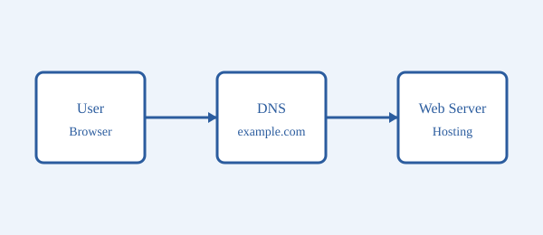

اسم الطالب: إسلام محمد الشحات أحمد
الرقم الجامعي: 2502137
المقرر: تطبيقات الإنترنت والمنصات الإلكترونية
كل موقع بنفتحه على الإنترنت لازم يكون متخزن على جهاز متصل بالإنترنت على طول، واسمه السيرفر. وكمان لازم يكون له عنوان نكتبه في المتصفح عشان نوصله. في البحث ده هشرح فكرة الاستضافة والدومين وإزاي الاتنين بيشتغلوا مع بعض.
الاستضافة هي خدمة بتأجرلك مساحة على سيرفر عشان تحط عليها ملفات موقعك (صفحات HTML والصور والملفات التانية). الشركة المسؤولة عن الاستضافة بتخلي السيرفر شغال طول اليوم عشان أي حد يقدر يفتح الموقع في أي وقت.
الدومين هو الاسم اللي بنكتبه في المتصفح، زي example.com. السيرفر في الحقيقة له عنوان رقمي اسمه IP، والدومين بيسهّل علينا نفتكر الموقع بدل ما نحفظ أرقام.
نظام DNS شبه دليل التليفونات. لما بنكتب اسم الموقع، المتصفح بيسأل DNS عن عنوان الـ IP الخاص بالدومين، وبعد كده بيتصل بالسيرفر ويطلب منه الصفحة.

1) المستخدم يكتب اسم الموقع في المتصفح. 2) المتصفح يسأل DNS عن عنوان الـ IP. 3) المتصفح يتصل بالسيرفر. 4) السيرفر يرجّع الصفحة ويظهرها للمستخدم.
| وجه المقارنة | الاستضافة | الدومين |
|---|---|---|
| التعريف | مساحة على سيرفر لتخزين ملفات الموقع | اسم الموقع اللي بنكتبه في المتصفح |
| مثال | سيرفر عليه ملفات الموقع | example.com |
| الغرض | تشغيل الموقع وإتاحته طول الوقت | تسهيل الوصول للموقع |
| التجديد | اشتراك شهري أو سنوي | تجديد سنوي |